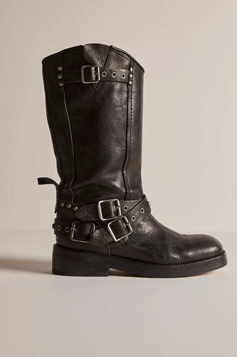
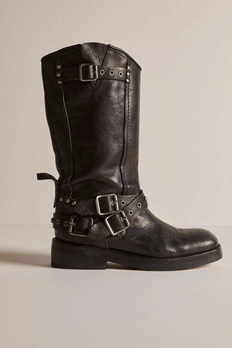

- User hovers over or off the over the product image.
- User hovers over or off the favorites (heart) button.
- User hovers over or off the "Quickshop" button.
- User hovers over or off the size buttons.
- User hovers over or off the "Add to Cart" button.
- User hovers over or off the "View Full Details" button.
- User hovers over or off the close button.
- User clicks on "Quickshop" button.
- User clicks on the close button on the modal
- User clicks off of the Quickshop modal
- User clicks on the size buttons.
- When hovering over product image, the cursor changes to a hand pointer.
- When hovering over product image, the image fades to a photo that highlights the product.
- When hovering over product image, the Product Name color fades to pink.
- When hovering over product image, a "Quickshop" button appears by fading into on the bottom of the image.
- When hovering over product image, a Favorites button appears by fading into the top right corner of the image.
- When hovering over the button Quickshop, the cursor changes to a hand pointer.
- When hovering over the Favorites button, the heart slowly fades to a pink color.
- When hovering over the Quickshop button, "Quickshop" slowly fades to a pink color.
- When hovering off product image, the cursor changes to a pointer.
- When hovering off product image, the image fades to more model centric photo.
- When hovering off product image, the Product Name color fades to dark grey
- When hovering off product image, a "Quickshop" banner disappears by fading away from the bottom of the product image.
- When hovering off product image, a Favorites button disappears by fading away from top right corner
- When hovering off the button Quickshop the cursor changes to a pointer.
- When hovering off the favorites button, The heart slowly fades to a grey color.
- When hovering off the Quickshop button, "Quickshop" slowly fades to a grey color.
- When clicking on the Quickshop button, a product modal fades in displaying additional product information not seen on the product card.
- Page behind modal is blurred/has a grey overlay
- When clicking on a size, the product size is updated on the page / in the database
- When clicking on a size, the button fades to a pink outline with a grey fill
- When clicking on the close button, the modal fades away
- When clicking off of the "Quickshop" modal, the modal fades away.
- When hovering over the close button and sizes buttons, the cursor changes to a hand pointer.
- When hovering over product sizes, they fade to a grey fill with a pink outline
- When hovering off product sizes, they fade to a grey outline with a white fill
- When hovering over "Add to Cart", the button fades to a pink outline and white fill with pink text
- When hovering off "Add to Cart", the button fades to a pink fill with white text
- When hovering over "View Full Details", the button fades to a pink outline and white fill with pink text
- When hovering off "View Full Details", the button fades to a pink fill with white text.
- When hovering over the close button, the X fades to a pink color.
- When hovering off the close button, the X fades to a grey color.
- When hovering off the close button and sizes buttons, the cursor changes to a pointer.
- When hovering over product image, the cursor changes to a hand pointer.
- When hovering over product image, the image fades to a photo that highlights the product.
- When hovering over product image, the Product Name color fades to pink.
- When hovering over product image, a "Quickshop" button appears by fading into on the bottom of the image.
- When hovering over product image, a Favorites button appears by fading into the top right corner of the image.
- When hovering over the button Quickshop, the cursor changes to a hand pointer.
- When hovering over the Favorites button, the heart slowly fades to a pink color.
- When hovering over the Quickshop button, "Quickshop" slowly fades to a pink color.
- When hovering off product image, the cursor changes to a pointer.
- When hovering off product image, the image fades to more model centric photo.
- When hovering off product image, the Product Name color fades to dark grey
- When hovering off product image, a "Quickshop" banner disappears by fading away from the bottom of the product image.
- When hovering off product image, a Favorites button disappears by fading away from top right corner
- When hovering off the button Quickshop the cursor changes to a pointer.
- When hovering off the favorites button, The heart slowly fades to a grey color.
- When hovering off the Quickshop button, "Quickshop" slowly fades to a grey color.
- When clicking on the Quickshop button, a product modal fades in displaying additional product information not seen on the product card.
- Page behind modal is blurred/has a grey overlay
- When clicking on a size, the button fades to a pink outline with a grey fill
- When clicking on the close button, the modal fades away
- When clicking off of the "Quickshop" modal, the modal fades away.
- When hovering over the close button and sizes buttons, the cursor changes to a hand pointer.
- When hovering over product sizes, they fade to a grey fill with a pink outline
- When hovering off product sizes, they fade to a grey outline with a white fill
- When hovering over "Add to Cart", the button fades to a pink outline and white fill with pink text
- When hovering off "Add to Cart", the button fades to a pink fill with white text
- When hovering over "View Full Details", the button fades to a pink outline and white fill with pink text
- When hovering off "View Full Details", the button fades to a pink fill with white text.
- When hovering over the close button, the X fades to a pink color.
- When hovering off the close button, the X fades to a grey color.
- When hovering off the close button and sizes buttons, the cursor changes to a pointer.
- No loops
- New buttons, "Quickshop" and the heart button appear after a user hovers over a product image.
- When modal opens, new buttons, "Add to Cart" and "View Full Details" appear, along with the product image, title, price, sizing options, color options (depending on product) fade in with modal
- There is now a fade transition when hovering over/off of the product image (Used to be a hard switch).
- There is now a fade transition to the color of the product name below the images when hovering over/off of the product image (Used to be a hard switch).
- There is now a fade transition when hoving over/off of the quickshop and favorites buttons (Used to be a hard switch).
- There is now a fade transition when clicking on/off of the quickshop when modal opens and closes (Used to be a hard switch).
- There is now a fade transition when hovering over/off of the "Add to cart" and "View Full Details" buttons (Used to be a hard switch).
- There is now a fade transition when hovering over/off of the sizes buttons (Used to be a hard switch).
- There is now a fade transition when hovering over/off of the close button on the modal (Used to be a hard switch).
Triggers
hover over/off
click
Rules
hover over
hover off
Quickshop
click on
hover
Feedback
hover over
hover off
Quickshop
click on
hover
Loops & Modes
Modes
click (quickshop)